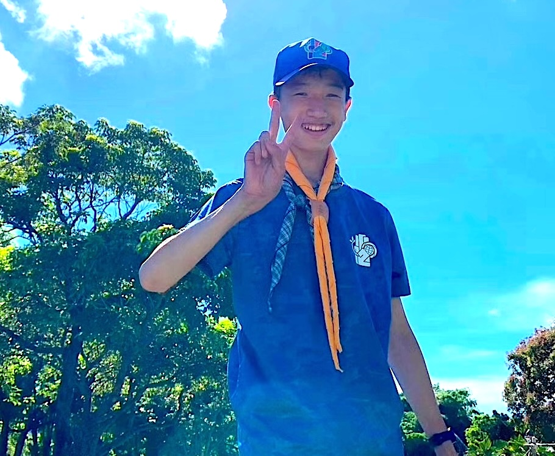
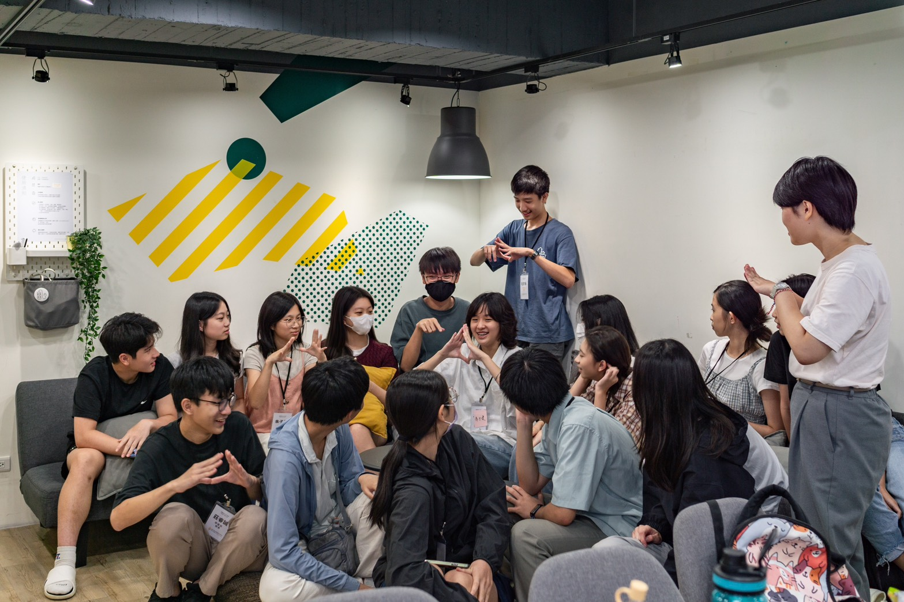

嗨！我是毛宇禾
Hi, I am Maomao
SCROLL TO EXPLORE ▼
> All About Me
我是來自臺北市數位實驗高級中等學校的宇禾，一個 。
我是個 科學人。從小，我就深深為科學著迷。從國小五年級至今，我總共參與了4次科展。這些經歷帶領著我在理科領域的探索，也培養出為人處事上的理性思維。
我是個 音樂人。三歲時因為一個衝動，開始踏進鋼琴的世界。十餘年來，我對於鋼琴的熱愛不曾停歇，我對鋼琴的學習也從未停止。
我是個 登山者。自幼我的父母就常常帶著我和我的弟弟一起去爬山，國小前，我們幾乎每年暑假都會去爬百岳，我十分熱愛山上的環境和爬山的過程～
我是個 資訊人。國小時，我開始好奇那些從網路上複製而來的程式。從C++到Python，我漸漸喜歡上這些程式語言與資訊技術。因著在資訊領域的學習，我掌握了善用科技工具解決問題的能力。
我是個 童軍。十年來，不曾停歇地參與童軍活動。在團集會中練習童軍技能、在露營活動中學習小隊精神、在全國大露營中和不同縣市、國家的童軍夥伴交流⋯⋯。童軍銘言第二條：「人生以服務為目的」，推進著我多次參與社會服務與環境保護相關活動，也讓我能夠以服務者的角度，參與身邊的各種議題。
現在，我還是個 議題關注者。國中時對於議題認識的萌芽，使我在高中接觸到學生自治、校訂必修議題相關課程時，開始研究各種議題，舉凡國家政治、國際關係、環境議題與教育議題等。我並不像個「正宗」的議題工作者，長期參與社會倡議、權益爭取，我開始接觸議題的時間很晚，也並沒有這麼豐富的經驗，但我喜歡也擅長透過理性析、換位思考的方式，理解現況，並思考解方或訴求。我相信，這多年來的學習路程，能夠使我對議題產生不一樣的看法，及與他人不同的關注或參與方式。
聯繫方式
- E-mail: jimmymao330@gmail.com
- Discord: @jimmymao330
- GitHub: https://github.com/Jimmymao330
> Resume
現職
- 候任新北市第13屆兒童及少年諮詢代表
- 臺北市數位實驗高級中等學校學生自治會 秘書部部長
- 臺北市數位實驗高級中等學校創客社 社長
- 臺北市數位實驗高級中等學校資訊研究社 教學
- 臺北市數位實驗高級中等學校羽球社 文書
- 臺北市數位實驗高級中等學校學生自治會 選舉罷免執行委員會 委員
- 臺北市數位實驗高級中等學校 社團評鑑委員會 社團代表
經歷
- 曾獲 International Exhibition for Young Inventors (IEYI) 2025, Sliver Award (Convenience, Senior)
- 曾獲 2025 IEYI 世界青少年發明展台灣選拔賽高中職組便利生活類金牌
- 曾獲中華民國第63屆中小學科學展覽會國中組生活與應用科學（二）科第二名
- 曾獲臺北市第56屆中小學科學展覽會國中組生活與應用科學（二）科特優
- 曾獲新北市108學年度中小學科學展覽會 國小組生物科優等暨團隊合作獎
- 曾獲新北市109學年度中小學科學展覽會 國小組化學科甲等
- 曾獲中華民國童軍109年優秀童軍獎章
- 曾獲臺北市數位實驗高級中等學校113學年度優良學生
- 曾任臺北市數位實驗高級中等學校學生自治會行政部（現改組為秘書部）部員［113］
- 曾任臺北市立實踐國民中學 學生代表（校務會議、午餐會議、獎懲委員會、服儀委員會等）［110-111］
- 曾任中華民國童軍臺北市第211團 聯隊長［112］
- 曾於中華民國童軍臺北市第211團擔任小隊長［110-111］
- 曾任新北市114年度文山、七星分區幼童軍聯團活動 活動組組員
- 曾於童軍露營活動擔任多次隊輔與工作人員
技能與認證
- 中華民國童軍 童軍高級合格
- 中華民國童軍 六項專科章合格
- APCS 3 2
- Yamaha Grade Examination Piano Grade 6
> Gallery




> More Info
- 中華民國童軍？www.scout.org.tw
- 世界童軍運動？ www.scout.org
- 數位實驗高中？tschool.tp.edu.tw
- 數位實中學生會？tschool-students.github.io